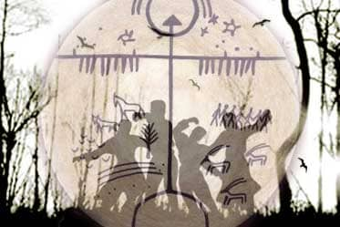

Katagan hanı Koşoy’un karargahı, yüksek kaleli bu şehir, Kaşgar, Semerkant, İstanbul, Mısır, Altı Şehir ve Kara Şehir arasında dolaşan tüccarların, yolcuların ve kervanların uğrak yeri idi. Altı han hiç haber vermeden kardeş oğlunun büyüğü Er Töştük’ün ziyafetine gideceğiz diye geldiler.
On üç han Kökötöy’ün aşında Manas’a karşı kargaşalığı başlattıklarında Koşoy onları sözle caydırmıştı. Yedi han Koşoy’un sözünü dinleyerek Manas’a dokunmamaya yemin etmişti. Han Koşoy öteki altı hanın nasihati almadığını fark etse de büyüklüğünü gösterip, ağırlayarak usulüyle karşıladı. Altı han toplanıp, Kökötöy’ün aşında Manas hakkında şikayeti tekrar dile getirince Er Koşoy hiddetten kendini tutamadı.
Aynı atanın oğulları olan altı han, yani Kazaklardan Er Kökçö, Taz’ın oğlu Ürbü, Buudayık’ın oğlu Muzburçak, Andıcanlı Sancıbeğ, Eştek’in oğlu Camgırcı ziyafet veren Er Töştök’ün beyaz çadırına geldiler.
Savaşçıya fenalık besleyen altı han, tulumdan bal, kımız ve şarap içip yedi gün yatarak nasıl bir kavga çıkarıp Manas’tan öç alacaklarını düşündüler. Hanlar geveze Ürbü’nün söylediğini uygun bulup ona inandılar.
Kuduran altı hanın altı elçisi atlarını koşturup yedi gün yol yürüyüp Manas’ın Talas’taki karargahına geldiler. Han karargahı, kapısı altından yapılmış yüksek bir kale idi.
Altı hanın elçileri savaşçı Manas’ı hep ordu başında, savaşta görmüşlerdi. Karargaha geldiklerinde Savaşçıdan çekindiler. Manas başımıza neler getirir diye korktular. Altı hanın elçileri ne yapacaklarını şaşırıp Er Manas’ın yanına girmeye cesaret edemeden şaşırıp kaldılar. Kapıcı başı Cooronçu bunların elçi olduğunu öğrendikten sonra Han Manas’a eğilerek söyledi.
Altı eren altı elçiyi arkasına alıp hanın bulunduğu hareme getirip kapıdan içeri aldılar ve başlarına yere değdirip “Han huzuruna varırken eğilip selam veriniz” diye öğrettiler. Kabaran altı elçinin nefesi kısıldı, dili tutuldu, ağızlarındaki sözler uçup gitti. Sırayla oturan savaşçıları görünce akıllarının kaçıran elçiler dizlerine kadar eğilip usluca selam verdiler. Oturanlar sadece Bakay onları selamını kabul etti. Tatlı sözlü, akıllı, birkaç dil bilen zeki Acıbay konuştu. Elçiler konuşamadan ellerini ceplerine sokup, hanlarının verdiği kağıdı çıkarıp arslan Manas’ın huzuruna sundular. Kudretli Han Manas, mektubu okuduktan sonra bıyık altında güldü.
Yedinci gün savaşçı Manas altı hanın elçilerine merhamet gösterdi, her birine altın yakalı kaftan giydirip, at verdi. Elçiler sırayla oturan büyüklere, görüp geçirdikleri olayları Manas’ın kahramanlığını, anlatıp Manas’ın mektubunu verdiler.
Manas, mektubunda şöyle yazmıştı: “Ben Manas Han emrediyorum ki, bütün halk kırk gün içinde karargaha gelsin! Gazaya çıkmak isteyen hazırlığını yapsın, bu işe yaramayan yatıp kalsın”.
Bu bir hiledir diye, gitmeye karar veremediler.Hanların yüzleri sarardı. Kederlenerek kaygıya daldılar. Savaşçıların içinde Eleman’ın oğlu Er Töştük ilk olarak söz aldı. Altı Han kırk gün içinde kalabalık bir ordu kurup Manas’ın Han karargahına geldiler. Han sarayının kulesindeki nöbetçi muhafızlar Manas’ın cebesini giyip büyük kulat’ına binip tek başına çıktığını gördüler. Okun ulaşabildiği Boz Tepe’ye çıkan han, elindeki davula dünyayı sarsacak şekilde şiddetle vurdu.
Savaş Kanlı Bir Şekilde Sürüyor
Atın davuldan gümbür gümbür ses çıktı. Kibirli beyler döşeklerinden fırladılar, beşikteki çocuklar ağladılar, bağlanan atlar oltaya takılan balık gibi sıçradılar. Altın karargah sarsıldı. Lanet olsun, yine kavga çıktı diye bütün millet karıştı.
Tepede sekerek koşan deve gibi kula atın yelesi ve kuyruğu rüzgarda sancak gibi yayılıyor. Savaşçının etek ve yenleri rüzgarda çırpınıyordu, heybeti gittikçe artıp ejder halini alıyordu, suratı kapalı hava gibi soğuk gözüküyordu, böyle iken hangi insan evinde rahat uyuyabilirdi ki. Bakay başta olmak üzere kırk çora cesur Manas’ın karşısına derhal toplandılar.
Başlarını kaldırıp “Savaşçı ne iş var” diye sormaya cesaret edemeden beklediler. Han Manas ordusunu alıp Doğuya hareket etti. Kuşluk vakti olmadan karşısında kalabalık bir ordu göründü. Manas altı hanın atlanıp yola çıktığını çoktan öğrenmişti. Karşılarında Manas’ı görünce kahramanlık taslayan altı han atlarından yuvarlandılar. Manas’ın kırk çorası altı hanın kalabalık askerlerini evlere paylaştırdılar. Askerleri pilav ve şarapla ağırladılar.
Ertesi gün Savaşçı Manas altın tahta oturup kırk çorasını, hanları ve bilgiç kılavuzlarını toplayıp kurultay yaptı. Altı Han Manas’ı avlamak için çok sayıda askerle gelip şimdi avullarına dönemeden orduya katılmak zorunda kalmalarına şaşkındı. Manas Pekin’e gidecek kalabalık orduyu Talas’a topladı. Karargahtan bir parça uzakta artçı koydu. Soydaş Türk oğullarına, ünlü hanlara altı yürük atlı habercilerle küçük birer mektup gönderdi. Ordu seksen günde hazır oldu.
Manas, Altay’dan geldikten beri yer değiştirerek beslediği atlarını askerlerine dağıttı. Her bölük başına kesmesi için bir kısrak, her kahraman başına bir yedek at verdi. Askerler savaşa çıkacakları günün gecesinde kutsal dağa çıktılar. Kula kısrağı kurban kestiler. Neşeyle tan attırdılar. Şafak sökmeye başlarken davul çalındı. Manas ordunun önünde yürüdüğü zaman şans getiren, düşmana saldırdığı zaman kalabalık askere bedel olan Bakay’ı gazaya han tayin etti.
Katagay hanı Koşoy hayır duasını okudu. Her avul sarı başlı beyaz koyun kurban kesti. Ordu harekete geçti. Davul çalındı. Koyu doru ata binen, bol paçalı geniş şalvar, geniş kolsuz kürk giyen Han Koşoy’un yönettiği ordu kapıdan çıktı. Kırk yiğidin başı Kırgıl davul çaldı. Almambet atını oynatarak gitti.
Ordunun başında Han Bakay gidiyordu, onun arkasında hanların idare ettiği askerler gidiyorlardı. Otuz bayrak taşıyan, üç yüz düdük, üç bin zurna alan kalabalık ordu han yoluna koyuldu.
Kalabalık ordunun başında, kırk çorası yanında, elli iki yaşında olan asilzade Er Manas, beyaz atmaca gibi nara atarak gidiyordu. Altındaki Ak-kulası uzmanların uzmanı tarafından denenmiş, göz nuru bir asil hayvan idi.Geyiğin boynu gibi boynunu kıvıran, kurşun gibi duraklamadan koşan hakiki yürük bir at idi. Yeryüzünde onun benzeri yoktu, ağzına geçirilen gem dişleri arasında çatırdıyordu. Dümdüz beli eğiliyor, geceleyin teke gibi koşuyordu. Olukçuklarla kaplanan ön dişleri çelik gibi kısılıyordu, yanına kimseyi yaklaştırmıyordu, başını çevirip bakışı, hareketleri atlardan farklıydı, güzel bir tavırla etrafına bakınarak sağlam adımlarla ilerliyordu, yelmesine rüzgâr yetişemezdi, koşusuna ok yetişemezdi, yüksek sesle bağırsanız sesiniz de yetişemezdi o böyle bir hayvandı.
Çin Ordusu Çok Kalabalıktı
Halk söylese de yalan söylemez derler ya. Hanlık tahtına sahip olan Almambet Çin’in Pekin ordusunu görmüş bir kahraman idi, o sağ yanına doksan hizmetçi, sol yanına almış muhafız alarak orduyu kontrol etti. Asker sayısını yeniden tam olarak aldı, askerleri seçerek ayırdı. On kişiye onbaşı, yüz kişiye yüzbaşı, bin kişiye binbaşı konuldu. On bini, yani bir tümeni savaşçı yönetti. Yüz bine birer bey konuldu. Yüz binlerce kişilik orduya otuz bey, otuz beye birer de sancak verildi.
Almambet adam sayısını aldıktan sonra ilk olarak hanlık emrini verdi:
Zavallı halk kaygılansa da ertesi günkü sefere hazırlandı.
Karanlık gidip şafak sökerken Almambet’in davulu dağ deresinde, ot gibi uyuyup yatan orduyu ürkütüp uyandırdı.
Sel gibi akan asker gece dahi soluk almadan, çan, zurna çalarak, gündüz de mola vermeden, at kesmeden, uyumadan, çölde on gün yol yürüdü. Duraklamaya izin vermedi Almambet. Kalabalık ordu, ıssız bucaksız çölde atlarına dayanarak, yolda uyuyarak, gözlerine kum, ağızlarına toz dolarak, kuvvetten düşmüş vaziyette on gün yol yürüdü, atlar yoruldu, kahramanların gözleri kamaştı. Almambet mola vermedi, kırk günde çölü arkada bırakıp, geniş Altay’ın dağlarına dayandılar. Uygun bir yer olan Kobulduu havzasına gelindiğinde ordunun peşindeki turnaya benzeyen Han Bakay, ordunun önündeki Almambet’e gelip rica etti:
Orduda bir telaş başladı, onbaşı, yüzbaşı, binbaşı, çora başı ve müfrezeler ileri geri koşup, bağırıp çağırıp, Tanrı korusun bu Çinliden diye, askerlerini bulmakta zorlandılar.
İki kahraman Almambet ve Sırgak, Çin topraklarının keşfi için atlarını seçip, silahlarını hazırlayıp harekete geçmek istediler.
Bütün millet Tanrıya yalvarıp hayır dua etti.
İki gök yeleli kurt atlarını sıçratıp yola koyuldu.
Kuvvetli iki arslan, uçan kuşlarla yarışıp düşmana fark ettirmeden, bulut gibi sessiz, ıssız bucaksız çölü, puhu kuşunun bile uçmadığı kırı takip ediyor atlarını dinlendirip akıl danışıyor, Pekin istikametine doğru gidiyordu.
Kalabalık ordu, rahat bir yere yerleşti. Hastalara bakıldı. Bu yabancı yerde, askerler her gün sayıldı. Yorulan atlar dinlensin, yorulan kahramanlar kendine gelsin diye devriyeye asker konup keşiften haber beklenip yatıldı. Oşpur bir türlü rahat edemedi. O, askerlere hünerini öğretmek zorunda idi.
Çubak’ın savaşçılığı Manas’tan eksik değildi, boylu poslu, geniş omuzlu, yılankavi boyunlu, çok kahraman biriydi. O, muskasını sıçratan yürük atı Kökteke’ye binerek önünü engelleyenlere bakmadan gitti.
Devriyeye giden Han Bakay, Çubak’ı tek başına yürüdüğünü gördü. Artçıdan onun istikametini öğrendikten sonra tepedeki altın çadırda habersiz yatan savaşçı Manas’a gitti.
Manas kızdığı zaman ordu değil, gökteki bulutlar bile kararırdı. Savaşçının görünüşü şöyle idi: Dimdik küstah gözlü, ince dudaklı, yassı yanaklı, uzun çeneli, gözlerin derin idi. Kahramanlığı apaçıktı. Manas da Aymanboz atına binerek Çubak’ın peşinden gitti.
Gök yeleli kurt Almambet Er Çubak’ın hırsını görüp atını çevirmiş ona aldırmayan Almambet sırıtarak selam verdi. Kızgın kudurmuş Er Çubak kimseyi dinlemeden yel gibi hızla gelerek Almambet’e bir dokundu.
Şimdi Er Almambet de sinirlenmiş, ağzından ateş püskürterek, tüyleri diken diken olmuş vaziyette, sinek kadar canını hiç düşünmeden lanet olası Çubak’a söverek hücum etti. Er Çubak da canını düşünmeden sağ yenini çözüp, kalkanı sırtına tutup, çelik kılıcını eline alarak dörtnala atını koşturdu.
Tepeye çıkan iki kahraman karşı karşıya geldiğinde dostluk hatırı yüzünden birbirine kıyamadan, bağırıp kılıç vuramadan bakıp durdu. Çubak Ağa! Almambet Ağa! Öfke düşman akıl dosttur derler. Acınızı benden çıkarın bari dedi Sırgak. Buna aldırmayan erler atlarını oynatarak birbirine tekrar saldırdı. Bu sırada, Manas’ın karaltısı doğan güneş gibi belirdi. Manas Aymanboz’a kamçı çalarak rüzgar gibi yetişip geldi. İki savaşçı kılıçlarını kınına takıp, birbirinden uzaklaşarak savaşçı Manas’ın karşısında durdular.
Kırgızlar Pekin’de
Arslan Almambet karşısındaki manzaraya imrenerek gün boyunca Pekin’i anlatadurdu. Savaşçılar yola koyuldular. İl içine girmeden, ine cine gözükmeden dağı takip ederek yürüdüler. Savaşçılar tepedeki yalnız çınar ağacının altındaki pınara gelerek atlarını bir yere bağlayıp yattılar. Almambet Manas ile Sırgak’ı bırakıp Çubak’ı alarak Pekin tarafına keşfe gitti. İki savaşçı dağ sırtına çıkıp düzlüğü araştırdı. Boyu dağ gibi olan Almambet birden ürktü. Er Çubak ağzını açtığı halde şaşırıp donakaldı.
“Kakançin’in Esen Hanına devriyedeki dağ koçu çoktan bizim haberimizi ulaştırmıştır. Kurnaz Esen Han Kakançin’in askerlerini koruyup Kırgızları yok edeceksin diye muhafız Makel adlı dev’i buraya göndermiştir. Şimdi Makel adlı dev’i iyice göreceksin Çubak” dedi Almambet.
Almambet Makel adlı devin tek gözünü hedef alarak attı. Ok gözüne saplanmıştı, Makel’in gözbebeği fıçı gibi yere düştü. Makil bağırarak gözünü tutup dizleri üzerine dayanakaldı. O ana kadar Er Çubak kayalık dağ gibi deve, oktan önce ulaşıp apaçık duran ağzına mızrak sapladı.
Makel adıl dev yuvarlandığında dağ kaymış gibi yeryüzü şiddetli gürültüyle sarsıldı. Fazla vakit geçmeden yere düşen devin kafatasına Almambet baltayla vurarak geçti. Makel’in kalkmasına fırsat vermeyen Çubak devin başına bir daha balta vurdu. İki kahraman her yandan üst üste ok atarak Makel adlı devi bir günde ancak alt ettiler. İki kahraman Makel adlı devin başını kesip gergedana yüklemede epey zorlandı. Er Çubak iki heybe taşına birlikte yükledikten sonra devin başıyla eşit düzeye geldi.
Devriyeye çıkan Sırgak, iki yiğidin ata bir şey yükleyerek geldiğini görüp Savaşçı Manas’a müjdeli haberi ulaştırdı. Makel adlı devin başı savaşçı Manas’ın ayağı altına yuvarlanarak gelip durdu. Savaşçı Manas da sırrı biliyormuş gibi yavaşça güldü. Savaşçı Çubak başkalarından geri kalmayayım diye tevekkülle yürüdü.
Korkan Çubak derin çukura girip kaçtı. Gürültü geçtikten sonra Çubak savaşçılara geldi. Onun rengi uçmuştu. Köprüye doğrudan basan geçemez. Kalabalık ordu olsa bile ölümden kurtulamaz. Karınca gibi kaynaşan askerler ise hileyle, suretle, taşla ustalıkla yapılmıştır. Tepeme asil taş konup han olduğum zaman, Kırgız olma gibi bir niyetim olmadığı zaman, Çin sınırına kalın barikat kurup Pekin’e giden yola, Kırgızlara, atlı savaşçı halklara karşı yaptırmıştım. Büyü ile yola nöbetçi konulmuştu.” dedi Almambet.
Rahat bir nefes alan Almambet taşların arasına gizlenip üzerine işaret konulan yerden kocaman bir kapı alıp gelerek içini yardı. Ondan Çin hanını giydiği iki elbiseyi aldı. Tepesine taş katılan elbiseyi kendisi giydi. Sırgak’a şalvar, çizme, kalpak ve dar elbise giydirdi, atlarına Çin örtüsü örttüler. Almambet yola bekçi olarak konulan kurnaz dağ koçunu da gebertti.
Dağın ortasındaki masmavi göle gelirken Almambet dertlendi. “Sırgakçığım, atının başını çevir savaşçı, bu göle bekçi olarak konulan ördek çoktan uçup gitmiş. Demek Çinlilere çoktan haber ulaşmış!” dedi Almambet kara kara düşünerek.
Almambet Casusluk Yapıyor
İki kahraman kaynaşan kalabalık Çinlinin içine girdi. Almambet eğilip Çinliler gibi diz çöküp Çince söylüyordu, Sırgak dalkavuk kıyafetine girmişti. Almambet’in Çin tarzı elbisesini, tacını, zümrüt taşı belgesini gören yoldaki görevli komutanlar ona tazim eyleyip durdular. Almambet rastladığı şehrin ordusunu başka bir yola gönderdi.
Almambet Kaspa’nın boyundaki atların arasında dolaşıp beyaz davula vurup, bağırıp çağırarak atları ürküttü, at çobanlarını saf dışı ederek atları yola sürdü. Çırpınan alta yüz ata yoldan hiç şaşmayan, karanlık gecede dahi izinden sapmayan Acıbay’ın atı Kartküröng kılavuzluk etti.
Takipçilerin önü iki günde ulaştı. İki kahraman birinci gün takipçilere kuşlara saldıran şahin gibi saldırıp onları darmadağın etti. Çin askerleri gittikçe çoğalıp onbinlerce asker ortalığı sis gibi kapladı. İki kahraman kah saldırıp, kah çekilip vur kaç savaşı yaptı. Savaşçı Manas ile Er Çubak’ın yanına bir an önce ulaşalım diye gözleri dört oldu.
Sonunda iki arkadaş halsizlenip üzengiden ayakları kayıp birbirine vasiyetlerini söyleye dururken tepedeki kırdan savaşçı Manas’ın kocaman karaltısı gözüktü.
Bu esnada rüzgarın uçurduğu çiğ gibi kalabalık asker savaşçı Manas’ı hemen fark etti. Haşmetli sevgili arslan tepede durup önüne baktı ki, dağın cenup yamacında Acıbay’ın Kartküröng’ü atların tamamını insan gibi önüne salıp sürüyordu. Dağ eteğindeki düzlükte Manas’ın bindiği Aymanboz meydana çıktıktan sonra yorgun düşüp durdu zavallı. Manas, uzağı yakını ayırmadan ucu çelikten yapılan, havada uçtuğunda alev saçan oku, öldürücü yay ile kalabalık düşmana doğru fırlattı.
Askerler teker teker yere serilmeye başladı.

Savaş sonrası şenlikleri.
Dört erenin bir araya gelişlerinde yıkıp savurmaları derecesinde güç ve kuvvet birikti, kalabalık asker kayalık dağa vurulan dalga gibi dört erenin silahıyla tarumar edildi. Telaşlanan Çin askerlerine kalabalık bir takviye ordu geldi. Şimdi karınca gibi kalabalıklaşan Çinliler dört yiğide doğru geliyorlar.
Kalabalık Çin askeri, yorulan dört savaşçıyı kuşatıp birbirinden ayırdı. Deminki savaştan uzak duran Kongurbay şimdi Manas’ın Aymanboz’unun yürüyemediğini, yorulduğunu görünce Manas’ı, canlı yakalayalım da bir eğlenelim diye bağırmaya başladı.
Savaşçı Manas, Kongurbay’a yetişip mızrağı saplamak üzereyken Aymanboz gevşeyip kaldı, atı yürük olan domuz büyük nehrin dar olan yerinden atlatarak kaçtı. Aymanboz yürüyemedi. Bunu gören Çin askerleri, Manas’ı yakalamak için yağmur gibi ok atarak onun etrafını sardılar.
Savaşçı Manas’ın başı zorda kalmıştı. Moğol eyerine omzunu koyup bu dünyaya küsmüş gibi dağı takip edip kaçtı. Savaşçı vadideki alaca karga gibi bastırıp gelmekte olan askerlere bakakaldı. Çinliler tepeyi on iki kat kuşattılar, ama ona yaklaşmaya cesaret edemediler.
Savaşçı Manas’ı kurtarmak için üç kahraman aralıksız yirmi dört gün savaştılar, canlarına dahi acımadılar. Er Sırgak altmış yerden, Er Almambet otuz yerden, Er Çubak kırk yerden yaralandı.
Şafak sökerken, etraf aydınlanırken dar bir yoldan yürüyüp, Ak-kula’yı yedeğe alan, Çin elbisesi giymiş, yetmiş kabilenin dilini bilen Acıbay askerleri kandırıp savaşçı Manas’ın saklandığı dağa ulaştı.
Savaşçı Manas, Ak-kulanın perçemlerinden tutarak boynunu kokladı, “kanatım! Senden ayrılınca hasretini çektim” diye atını eyerleyip düşmana saldırdı. Bu sırada arkada kalan on iki hanlı Kırgızların ordusunun geldiği davulu vuruldu.
Korgurbay’ın askerleri fazla karşılık göstermeyip, Kırgızların saldırısına dayanamadan Pekin’e doğru kaçtılar. Kongurbay dağılan kahramanlarını engelleyemediği için sıkıldı. Kırgızlar kaçan düşmanın ardından kovaladılar. Gök toz duman oldu, insanlar ne yapacaklarını şaşırdılar, etraf kana boyandı, nice tulpar at öldü. Cesetler dağ gibi yığıldı.
Kongurbay’ın Algarıs’ı yan tarafında kanadı olan çok değişik bir hayvandı. Karaca gibi uçarcasına koşup uzaklaşıyordu. Manas’ın Ak-kulası çok iyi yetiştirilmişti, göğsünü kaldırarak koşarken yele ve kuyrukları yayılıyordu, Kongurbay’ın peşini bırakmadan kovalıyordu. Birbiriyle çekişen kahramanlar dağ sırtlarını, yamaçlarını aştılar. Manas’ın Ak-kulası ok gibi hızla koşup perçemlerini göğe atıyordu, ağzındaki gemi takırdatıp, ince çubuk gibi kuyruğunu kalçasına vuruyordu, tabanıyla takırtı çıkarıyordu, ağzını genişçe açmıştı, kan karışmış beyaz köpükleri göğsüne saçılıyordu, başını yere doğru eğerek koşuyordu, at şimdi epey kızışıp kalmıştı.
Büyük kumsala gelirken, savaşçı Manas Ak-kulası ile yetişip gelip Korgurbay’ın ciğerini hedef alarak mızrak vurdu. O da çevik kahraman idi, kendini mızraktan kaçırıp keskin kılıcıyla Savaşçının mızrağını kesti. Kuvvette yarışan savaşçı Manas Er Kongurbay’ı kovalaya kovalaya Çet-Beecin’in kapısına kadar takip etti. Düşmanın hilesini bilen Almambet onu görünce Saralaya kamçı çalarak kahraman Manas’ın peşinden geliyordu.
Çin askerlerinin atlıları kaçtılar, kalanları ele geçirilip kanlarının aktığı derin çukura gömüldüler. Yorgun düşen kahramanlar tulparının eğerini ve teğeltisini çıkardıktan sonra atlarını bir yere bağlayıp elbiselerini çıkarmadan Moğol eyerine yaslanarak kuş uykusuyla tan attırdılar.
Şafak sökerken Çin ordusunun kaçtığı taraftan büyük bir ordu göründü. Yaklaştığı zaman baktılar ki, cesur gök yeleli kurt Çubak, Mançuların hanı Neskara başta olmak üzere kırk beyi bağlayıp getiriyordu.
Sevinç gözyaşları döken savaşçı Manas: “Ah, canım Çubağım” diye bağırıp karşısına çıktı. Savaşçı Manas Mançu hanının başını kesmek için kılıcını kınından çekti. Dar kapının dört tarafında bekleyen muhafızlar Kırgızların elçilerini hanın hizmetçilerine teslim ettiler. Hizmetçiler elçileri altın kapıdan rahiplerin eline ulaştırdı.
Hanlığı vermezse, şartı kabul etmezse şehre gireceğim, o zaman halkı zarar görür, tutuşacağım derse Çet-Beecin’in civarındaki ıssız yere gelsin diyor. Göreceğini orda görsün diyor!” Kongurbay inatla elçileri keseceğim, derilerini yüzeceğim diye atılmıştı. Onu Esen Han durdurdu.
Çinli Esen Han Manas’ın Korkusu İle Titriyor
Esen Han böyle söylerken Er Kongurbay kahrolarak bağırdı. Esen Han danışmanları, komutanları, hanları, rahipleriyle toplantı yaptı. Esen Han saray kızı Burulça, Aycangcung’un kızı Birmıskal başta olmak üzere Han sarayından ay yüzlü, ince belli, küçücük ağızlı, cadı gözlü, horoz boyunlu, düğme saçlı, saçbağı takan nazlı bin güzeli seçip, kırmızı ipek elbise giydirip, yelmeyen attan bindirip, develere altın yükletip Çet-Beecin’i kuşatan Kırgızların hanı savaşçı Manas’a hediye gönderdi.
Manas Han’ın altın süslü davulu vuruldu.Iraman’ın Irçı oğlu halk arasında dolaşıp duyuru yaptı. Dalgalanan asker çırpınarak: “Yaşa Manas! Var ol, Manas” diye dua ettiler.
Çin ilinin halkı, Han Manas’a eğilip tazim eyledi. Göğün oğlu denen Esen Han padişahlık mührünü altınla işlenmiş kağıdın üç yerine basıp altın tahttan indi, Han sarayında hiçbir harekette bulunmayacağım diye yemin etti.
Her ülkeden, halktan gelen şık giyinmiş elçiler yerlere kadar eğildi. Savaşçı Manas Çet-Beecin’e han olmasının altmışıncı günü düğün şöleni düzenledi. Er Almambet saray güzeli Burulça’yı, Er Çubak, Aycangcung’un kızı Birmıskal’ı aldı.
Han Manas Çet-Beecin’de ilk olarak altın kağıda mührünü basıp yarlık çıkardı. Yarlığa aldırmadan altın ile mal mülk kapanlar vardı. Almambet herkesin önünde onların başlarını kestirdi. Askerler korktu ve bozukluklar azaldı.
Manas’ın bütün halka han olmasını Savaşçının kötü düşünceli akrabaları ile kötü niyetli bazı ileri gelenler beğenmediler. Savaşçı, Er Almambet’in sözüne kanaat getirdi. Manas’ın Han sarayını akıllı Acıbay yönetti. Büyük orduyu Almambet idare etti. Gece gündüz uzaklarda bulundu. Han sarayının aşçısı olarak, elli yıldır Kakançin hanına yemek hazırlayan, Türkçeyi iyi konuşan Şuykuçu rahip kaldı.
Er Koşoy, Er Bakay ve Kırgızların büyükleri danışarak “Manas Pekin’e han oldu, altın tahta oturdu” diye Ala-Dağ ve Talas’taki Kırgızlara haber vermek için büyük kalpak giyen Er Şuutu’yu müjde vermeye gönderdiler.
Er Şuutu’yu ayrıca çağırıp, askerlerin durumunu, Çin’de gördüğü ve geçirdiğini, savaşçı Manas’ın durumunu sordu, sabırsızlandı
Çinlilerle Savaş Devam Ediyor
“Er Şuutum, Gök yeleli kurdum Pekin’e han oldu diyeceğine başı derde girdi desene, altın tahta oturdu diyeceğine eceli geldi desene. Kaç kere söyledimse de sözümü dinlemedi, söylediğime yanaşmadı. Pekin beş günlük yol dedi. Pekin’in halkı hor dedi, Şuutum. Kakançin’e han olursa, boğazından yenilir, Pekin’e tutulursa savaşçıların tamamı Çinlilere yenik düşer, Şuutum. Duyduğuma göre Pekin’e giden geri dönmezmiş, oraya tutulan sağ kalmazmış. Dikkatle dinle Er Şuutum, yüce soylu efendim evladını ne zaman görecek? Arkasında erkek oğul kaldı, kötü niyetli akrabalar kötülük edecektir, beyim Pekin’de ölürse gözümden yaş kurumaz!” dedi Kanıkey hıçkırarak ağlayıp.
Şuutu kul tulpar atını oynatıp altı gün yol yürüyerek Pekin’e ulaştı. Akşam olup karanlık çökerken, Çet-Beecin’e ulaşmak üzereyken, kapıdan içeri girerken Er-Şuutu Kongurbay’a rastladı.
Düşmanın kurdu Er Kongurbay Ala-Dağ’a haber gönderip Er Şuutu’nun gittiğini öğrenmişti. Talas’tan haber gelecek diye yolu kesip bekliyordu. Er Şuutu’yu görür görmez Algara atını sıçratıp, ağzından rüzgar çıkarıp dağdan çıkan arslan gibi saldırdı. . Kongurbay’ı gören Şuutu kulun bileğinden derman gitti, yüreği yerinden oynadı. O atını geri çekemeden, arkasına bakmadan Taybuuruldun üzengi kayışına basarak kaçtı.
Ölesiye kaçam Şuutu nehrin bataklığına tutuldu. Kongurbay yaklaşmaya başlarken keyfi kaçan Şuutu atını mahmuzlayarak nehire bırakmıştı, yetişkin tulpar hiç şaşmadan çabucak nehrin öteki kıyısına atladı. At atlarken kesenin ağzı açılıp Kanıkey’in yazdığı mektup nehire düştü. Şuutu kul düşen kağıda bakmadan Çet-Beecin’e doğru kaçtı. Fazla geçemeden, gözü açıp kapayıncaya kadar (Azizkan’ın) altın perçemli, saçaklı kuşak oğlu Almambet Sarala’yı eyerleyip, Talas’tan çıkan habercinin gelmesi yakındır diyerek, yolları gözlüyordu.
Şuutu’yu takibe alın Kongurbay’ı görünce tahammül edemeyerek, “Manas” diye bağırarak hücum etti.
Almambet’i gören Kongurbay bu kahrolası beni rahat bırakmaz diye düşünüp çarpışmaya cesaret edemeyerek başka bir yana saptı.
Alevke’nin herifi Er Almambet’ten ölesiye kaçarak kurtuldu. Savaşçı Manas sabırsızlanarak Talas’tan haber bekliyordu. Er Şuutu’yu kendisi karşıladı.Savaşçı Manas Kanıkeyi’in bu sözlerini önemsemedi. Savaşçı Manas kahramanlarına emir verdi:
Kahraman Bakay, Katağan’dan Han Koşoy, Eleman’ın oğlu Er Töştük başta olmak üzere pek çok kahraman Ala-Dağa döndüler. Pekin’e ulaşan ordu şimdi bir göç kafilesine benzemişti. Göbek kanımız damlayan yer neredesin diye yola koyuldular. Altın hanın herkesten evvel dönen bazı adamları savaşçı Manas hakkında dedikodu yaymaya başladı.
Böyle diyen altı han sevinerek Ala-Dağ’a doğru hareket etti. Kongurbay Han sarayını görüp gizli sırlarını öğrendikten sonra, yanındaki bir çok dil bilen rahibi dilenci kılığında giyindirip eline değnek verip, omzuna beyaz heybe koyarak Kırgızca vird çektirip kapıdan içeri soktu.
Manas Pekin’de
Dilenci Manas, Han’ın aşçısı Şuykuçu’ya gizlice uğrayıp, tabak kadar ekmeğin içine gizlediği mektubu alarak çıktı. Kongurbay ekmeği yarıp mektubu okudu ki, Şuykuçu Han Manas’ı öldürmenin yolunu yazmıştı. Mektupta şöyle demişti: Pekin’i yöneten Manas’ı savaşarak, güreşerek yenemeyiz. Bunun bir yolu var: “Her Cuma günü bir defa şafak sökerken, yer aydınlanırken, nehir kıyısında yüzünü elini yıkayıp, çıplak ayakla, silahsız, yalın kaftan giyinip, korkusuzca yere ve suya ibadet edip sükûnetle oturur. Omuzunda avuç kadar bir beyaz var. Ecelin girebileceği yer orası. Ondan başka çare yok.”
Kırk çoranın içinde o gün bekçilik sırası Acıbay’a gelmişti. O hiç aldırmadan, dışarıdan düşman gelebileceğini düşünmeden, mızrağını yere saplatıp at üzerinde taşa dayanarak uykuya dalmıştı.
Şafak sökerken, çoban yıldızı belirdiğinde, Gök yeleli kurt savaşçı Manas kuleyi doğru çıplak ayakla çıkageldi. Gök nehirin kıyısında önüne beyaz çarşaf serip oturmuş atmakta olan tan ışığında kırmızıya çalan beyaz, yüksek dağa imrenerek bakıyor. Tanrıya ibadet edip Güneşten yaşam gücü alarak sükûnetle oturuyordu. Bu adeti çocukluk yıllarında Oşpur’dan öğrenmişti
Kalmuk hanı Kongurbay gevşeyip oturan savaşçı Manas’ın omzuna iki eliyle baltayı indirdi. Savaşçı manas yere serildi. Yıkılmış dağın çıkarabileceği sese benzer bir sesle korkup uyandı Acıbay. Savaşçı Manas’a gelip baktı ki, Manas yerde uzanmış yatıyordu. Etrafına bakında, kara oyuktan bir karaltı kaçmaya çalışıyordu. Acıbay ata binerek kaçan karaltıyı mızraklı vurdu.
Kongurbay kanatlı atını kaleden atlatıp kaçarken kendini kaybedip bir hendeğe düşmüştü. Er Kongurbay, Kakançin halkına Manas’ı geberttim diye haber verdi. Han Manas’ın yarısını gören Almambet şaşırdı. Atlarını esirgemeden yol yürüdüler. Günler geçti. Arslan Manas: “Geçenlerde halka Pekin’i itaat ettirdim diye haber göndermiştim, bugün başına balta yiyip, Çinlilerden korkup altın gümüşünü yağmalayıp kaçıp gelmiş demezler mi millet? Takdirim gelmişse öleyim. Ne olursa orduyla beraber olayım” diye düşündü.
Pekin’deki Çin ordusu harekete geçip, dört taraftan gelerek Han sarayını kuşattı. Han sarayında davul vuruldu, kırmızı sancak taşıyan Kırgızlar kalabalık düşman ordusunu kumluk çölde karşıladılar. Bu sefer de kanlı savaş oldu. Tek tek dövüşler olmadı, ineğin üzerindeki tüyler kadar fazla olan iki ordu birbirine girdi. Dağlar birbirine çarpılmış gibi gümbür gümbür ses çıkarıyordu. İçecek bir yudum suyu bulunmayan çölde dokuz gün savaş oldu. Yaralanmayan kahraman, ayakta durabilen at kalmadı. Kırgızların kahramanları vur kaç savaşı yaparak çekildiler.
Almambet’in askerleri, savaşçı Manas’ın yanına ulaştılar. Savaşçı Manas Çin’e mahsus gelip nasıl kaçıp gideceğim diye başını çevirip duruyordu, peşinden yetişen üç savaşçıyı gördükten sonra çok sevindi.
Gaddar Kongurbay kalabalık Çinli, Mançu ve Kalmukları hayvan gibi dövüp kavgaya sürükledi. Bu sefer nice nice kahramanlar helak oldu, nice atlar eğersiz, sahipsiz kaldılar. Atlar kızıl kanla boyanan çölde yıkılan kahramanların arasında dolaşarak acı acı kişnedi.
Çinliler Manas’ı Kandırıyor
Savaşçı Manas elçinin yalvarışına inanıp Çin ordusuna yedi gün süre verdi. Kırgızlar halsizlenip yorulan askerleri Çinliler itaat etti diye rahatça uyumak için silahlarını çözdüler. Atları otlatıp keyifle yattılar. Savaşçı Manas’ın Çin ordusuna süre verdiğini iki gecikmeyle öğrenen Almambet şaşırdı. Manas kandırıldığını sezse de başkalarına belli etmeden kendini savundu.
Kandırıldığını anlayan bazı Kırgızlar yaralı olan savaşçı Manasa acıyıp onu acele ile yola çıkarıp gönderdiler. Kendileri ise tekrar gazaya giriştiler. Manas hanın kırk çorası rast geldiği tarafa saldırıp, ara sıra çarpışmaya girip zor anlarda kahramanlığını gösterdi. Çinlilerin yiğidi Kongurbay yaralı olan Aydarhan’ın oğlu Er Kökçe’yi öldürdü .Buudayık Han’ın oğlu Muzburcak Kökötöy’un oğlu Bokmurun öldü. Kahraman Sırgak soluk almadan düşmanın ortasını yaran Kırık Çoraya yardın ediyordu. Çin askerleri bağıra bağıra kaçıyorlardı.
Er Sırgak sancağın bulunduğu yere ulaşıp nişancı Şıpşay’ın babası Karacoya saldırıp onu devirdi. O kendini kurtarıncaya kadar savaşçı Almamber sarala atına kamçı çalarak gelip korkunç bir haykırışla Pehlivan Karaçoy’ un başını kesti.
Başında taş işareti bulunan bu Çinli zattan ayrılan Kongurbay yaygara koparıp bıyıklarını yolarak Almambet’i öldüreceğim diye atına kamcı çaldı. Tam bu sırada hedef bekleye duran nişancı Şıpşay yay attı. Er Sırgak olduğu yere düşüp yığıldı. Kökçebiç onun etrafında dönüp dururken ona da ok isabet etti.
Canım dostum Almambet’e yardım edeceğim diye, uzun boylu, geniş omuzlu, arslana yenilmez, hesapsız sayıdaki askere hiç aldırmadan saldıran Han Bakay’ın oğlu Çubak da kavgaya girdi. Çubak atından düştüğünde onu altı bin kadar pehlivan kuşattı. Çaresiz kalan kahraman Çubak öleceğim diye düşünmeden, gökten inen altı çeliğin biri olan keskin kılıcını eline alıp karşısına çıkanı öldürdü. Er Çubak dokuz gün kudurmuş düşmana karşı direndi.
Canım Çubak nerede diye arayan Er Almambet etrafı sarılarak başı derde girmiş durumdaki dostunu görünce korkunç bir şekilde haykırdı. Önüne çıkan kahramanları kılıcıyla mızrağıyla sançarak Er Çubak’a ulaştı. Onu saralaya bindirip kaçırdı.
Er çabuk yolda duran Kögalasına bindikten sonra kaçmayı bırakarak geri döndü ve savaşa girdi. Beli kırılan ordusunu gördüğü için kederlenerek ağlayan Almambet, kırk yiğide yalvardı. Almambet’in arkasından Manas’ın kırk çorası gazaba gelip atılarak bağırıp gazaya girdi. Günlerin gelip geçtiği bilinmiyordu. Argın Han’ın oğlu Acıbay’ı Çinliler canlı yakalamışlardı. Acıbay’ı gören Akbaltanın oğlu Çubak da yetişti. Kahraman Almambet arslan da Çinlilere saldırdı. Sevgili Almoş Acıbay’ı atının arkasına alarak kaçırdı.
Çinliler Üstün Geliyor
İğrenç Çinliler bölüklere bölündüler. Öldürdükçe çoğaldılar, gittikçe güçlendiler. Ah, geniş dünya dar oldu. Yeryüzü kahramanların, atların kanlarıyla sulanıp silkindi. İçecek bir yudum su bulamıyordu. Atlar susuzluktan ölüyorlardı. Kahramanlar baygın düşmüşlerdi. Nice dayanıklı pehlivanların vücudundan kan sicim gibi akıyordu. Onlar mızraklarına dayanmış halsiz duruyorlardı.
Almambet’in heybetini gören kongurbay sağ sola kamçı çalarak kaçtı. Almambet, Mançu’yu elime geçireyim diye, etrafına bakmadan, anını hiç düşünmeden onu takip etti. İki Savaşçının atlarının yürük olduğu düz alanda belli oldu. Yamaçta Kalmuk yiğidi Kangurbay’ın çift kanatlı Algarası karaca gibi uçuyordu. Yokuşa gelirken Almambet’in Saralası da peşinden yetişmek üzereydi.
Argın Han’ın oğlu Acıbay karşısına çıkarak Almambet’in Saralası’nın dizginini çekti. Acıbay ağzını kapayınca kadar düşman kalabalıklaştı ve Almambet’i ortaya aldı. Almambet’in yüz yerine mızrak saplandı, dolu gibi yağan okla yetmiş yerden yaralandı. Er Kongurbay dağın yamacında gözüktüğünde Han Almambet ısrarla, hiddetle Saralayı kamçıladı. Kuvvetten düşen Sarala bir kara taşa takılıp sendeleyerek düştü.
Er Almambet vuruldu. Büsbütün açık olan gök bir anda karanlığa büründü. Kırgızlar için büyük kayıp oldu. Almambet ölünce sevgili arslanından ayrılan kalabalık ordu üzülerek ağladı. Kırgızların bir avuç ordusunun kuvvetlilerinin çoğu savaşta şehit oldular. Kırk çoranın on ikisi öldü. Ordu Almambet gibi komutanından, dayanacak dağından mahrum kaldı. Kuvvetten düşüp halsizlenen kırk çoranın sağ kalanları toplanarak Çinlilerle kanımızın son damlasına kadar savaşalım mı, ya da geriye dönelim mi diye akıl sormak için gerideki yaralı Manas savaşçıya haberci gönderdiler.
Acı çeken yaralı kaplan Manas çok üzüldü, doğan gözü gibi gözlerinden yaşlar aktı, yüreği sızlayıp hıçkıra hıçkıra ağladı. Onun sesi yedi kat yerin altına, yedi kat göğün üzerine ulaştı. Manas gayrete gelip zırhını giydi, davul çalarak gerideki eli silah tutmaya yarayan askerleri topladı. Kırgız ordusu bozguna uğrayıp kaçmaya başlamıştı. Savaşçı Manas’ı uzaktan görünce parolayı söyleyerek tekrar savaşa girdiler.
Kaplanın Ak-kulası önce kişnedi çenesini Manasa dayayarak başını kuzeye çevirdiği halde dağ yıkılmış gibi düştü “Kurban olayım Akkula kanadın kırıldı. Mübarek tulparım yer yüzündeki toynaklılar arasında bir benzerin yoktu. Yaşıtım kulam yürüyüşü hiç bir ata benzemezdi. “Manas’ın iki gözü iki çeşme oldu. Ak-kula’nın kumaş çulunu atıp, saplanan oku çekip çıkardı, boynundan kucaklayarak okşadı.
Manas zorda kaldığımda çekeceğim diye emanet olarak sakladığı ucu keskin okunu alıp eyer kadar kara taşın arkasına gizlenip ıssız çölde Kırgız’ın atını geberttik, kendisi nereye kaçacak diye sevinen Çinlilerin beylerine göz dikti. Islığı yankılanarak alev saçan ok şimşek gibi gürleyip, Çinlilerin nişancısı Şıpşay’ın gırtlağını delip geçti. Bunu gören Çinli askerler darmadağın olup kaçtılar. Dişlerini sıkan, belini doğrultan arslan Manas yeni doğmuş güneş gibi heybetli gözüküyordu.
Manas ile Kırgızlar Geri Çekiliyor
Manas kırk çorasının sağ kalanlarını bir araya çağırıp onları gayrete getirdi, cesaretlendirdi, orduyu toplayıp mızrak tutanları, balta tutanları ve nişancıları ayırıp, güçsüzleri bir kenara çıkarıp, Er Bakay’ın eline bayrak verdi. Savaşçı aç aslan gibi hırsla, ejderha gibi heybetle etrafını kuşatan düşmanla hiç şaşmadan savaştı.
Issız çölde Çinliler ile Kırgızlar arasında büyük bir katliam başladı. Birdenbire dağ kaymış gibi buram buran toz duman yükseldi. Kahramanlar atlarından yuvarlanıyor, atlar yerde kıç atıyorlardı. Katliam beş gün beş gece sürdü. Manas savaşçı, Çinlileri perişan etti. Çin askerleri kaçarak büyük kapılı surları arasına girip kayboldular.
Pekin’in surları, kırk arşın yükseklikte idi, çevresine kazılan göl de kırk arşın genişlikte idi. Toz dumanın giremediği, üzerinden kuşun dahi uçup geçemediği, kimsenin açamadığı kapısı taş gibi dayanıklı idi. Kırgızların güçlü alp erenleri surun dibine gelip kapıyı kıracağız diye bir biri ardına kapıyı omuzladılar.
Bu sırada mavi gökten bir ses işitildi.
‘’ Tanrının oğlu, Manas! Çinlilere gücün yetmez, artık Pekin’e girmeden dön!’’
Manas tanrının emrine uydu. Savaşı durdurdu.